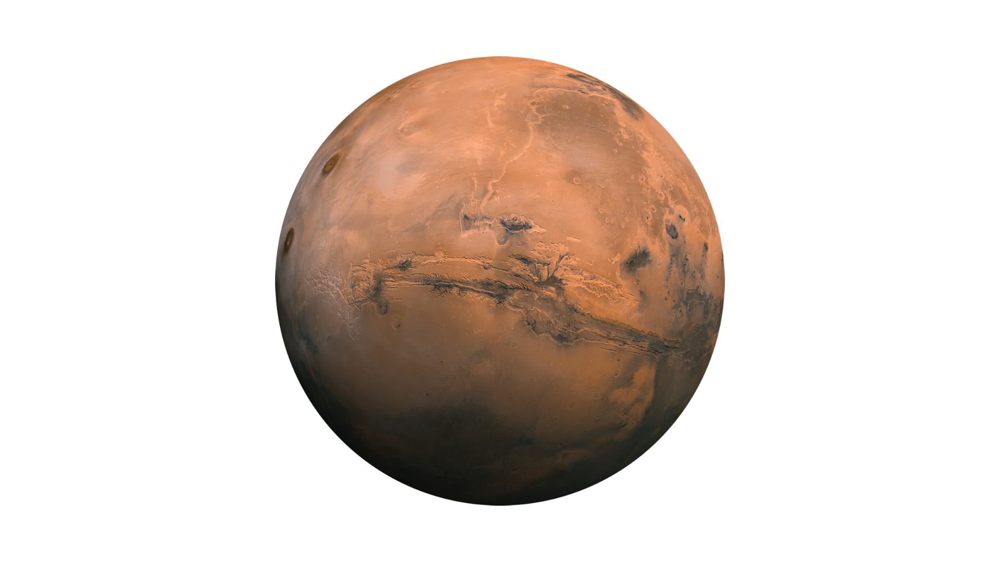

Марс (Mars)
Адамзаттың болашақ мекені: Системалық сипаттама
Марс — Күн жүйесіндегі Күннен төртінші планета және Жерге ең жақын орналасқан. Ол бетіндегі темір тотығының көп болуына байланысты қызыл-тотыққан түсімен танымал. Марс - Жерден кейін адамзаттың колонизациялауына ең қолайлы деп саналатын Жер тобындағы ғаламшар. Онда бұрын су болғаны туралы айғақтар бар.
Қызықты Деректер (DATA ARRAY)
Қызыл Түс:
Планетаның беткі қабатындағы темір тотығы (тотыққан темір) оған қызыл түс береді.
Ең Үлкен Тау:
Марста Күн жүйесіндегі ең биік тау — Олимп Монсы (Olympus Mons) орналасқан, оның биіктігі 21 км-ден асады.
Екі Серік:
Марстың екі кішкентай, пішіні дұрыс емес серігі бар: Фобос пен Деймос.
Ұқсас Тәулік:
Марстағы бір тәулік (сол) Жердегіден сәл ұзағырақ, шамамен 24.6 сағатты құрайды.
Су Іздері:
Зерттеулер Марс бетінде ертеде сұйық су болғанын және полюстерінде мұздың бар екенін көрсетеді.
Зерттеулер:
Марс — адамзат ең көп зерттеген планета, оған ондаған орбиталық аппараттар мен марсоходтар жіберілген.